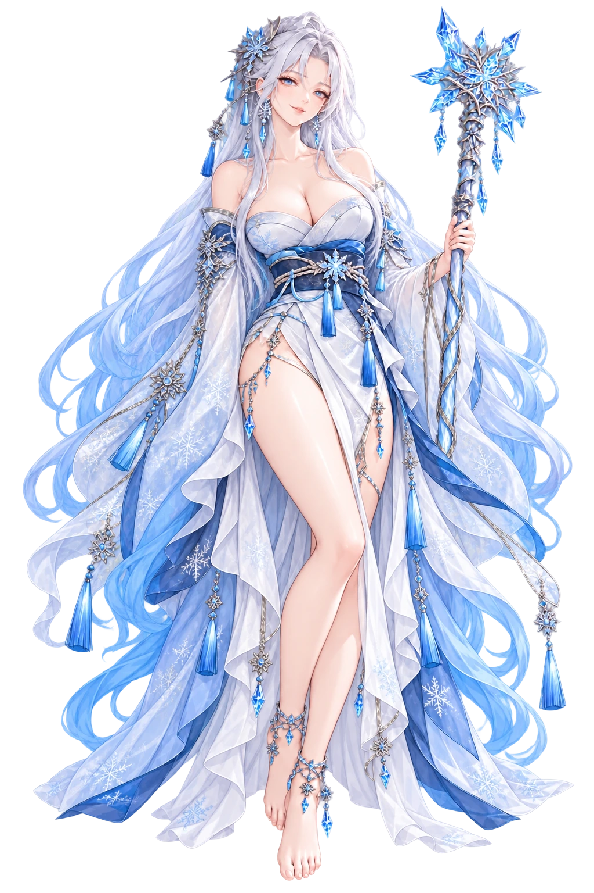

Kaede · Episode 2
Horns and Honesty
♥ Bond 3
SD cut-in (placeholder art)
Kaede
♪
★
I'm not sulking. Oni don't sulk. ...Snowball, stop patting my head. I mean it.
Log
Auto
Skip
Back
Hide
Save
Config
Pat her head too.
"I think the horns suit you."